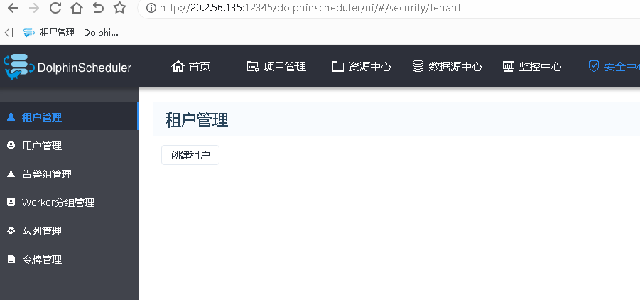

背景
1. 装docker-compose环境
k8sworker-k8s dolphinscheduler 20.2.56.135
| 将docker-compose-Linux-x86_64上传到服务器，将文件转移至/usr/local/bin/
mv docker-compose-Linux-x86_64 /usr/local/bin/docker-compose
chmod 755 /usr/local/bin/docker-compose
docker-compose -v 检查是否可以
|
1
2
3
4
5
| [root@iZ9ur01cg80efuvuzubh7kZ tmp]# cp docker-compose /usr/local/bin/
[root@iZ9ur01cg80efuvuzubh7kZ tmp]# docker-compose -v
-bash: /usr/local/bin/docker-compose: Permission denied
[root@iZ9ur01cg80efuvuzubh7kZ tmp]# chmod 755 /usr/local/bin/docker-compose
[root@iZ9ur01cg80efuvuzubh7kZ tmp]# docker-compose -v
|
2. 装 dolphinscheduler
1
2
3
4
5
6
7
8
9
10
11
12
13
14
15
16
17
18
19
20
21
22
23
24
25
26
27
28
| 把 dolphinscheduler-nj.tgz 包解压到/home/gw/software
[root@iZ9ur01cg80efuvuzubh7kZ home]# mkdir -p /home/gw/software
[root@iZ9ur01cg80efuvuzubh7kZ home]# tar -xf /tmp/dolphinscheduler-nj.tgz -C /home/gw/software/
[root@iZ9ur01cg80efuvuzubh7kZ home]# cd /home/gw/software/dolphinscheduler/
vim config.env.sh 修改：
1. 将mysql修改成现场的
DATABASE_HOST=20.2.56.145
DATABASE_PORT=13306
DATABASE_USERNAME=admin186
DATABASE_PASSWORD=NewMysql20220701
2. zk修改成现场的地址
ZOOKEEPER_QUORUM=20.2.56.143:2186,20.2.56.144:2186,20.2.56.140:2186
启动服务：
cd /home/gw/software/dolphinscheduler
docker-compose -f docker-compose.yml up -d
检查：docker-compose ps -a 命令：
[root@host-192-168-21-8 dolphinscheduler]# docker-compose ps -a
NAME COMMAND SERVICE STATUS PORTS
dolphinscheduler-dolphinscheduler-alert-1 "/usr/bin/tini -- /r…" dolphinscheduler-alert running (healthy) 50051/tcp
dolphinscheduler-dolphinscheduler-api-1 "/usr/bin/tini -- /r…" dolphinscheduler-api running (healthy) 0.0.0.0:12345->12345/tcp
dolphinscheduler-dolphinscheduler-master-1 "/usr/bin/tini -- /r…" dolphinscheduler-master running (healthy) 50051/tcp
dolphinscheduler-dolphinscheduler-worker-1 "/usr/bin/tini -- /r…" dolphinscheduler-worker running (healthy) 50051/tcp
|
================================
第一次启动服务报错：
1
2
3
4
5
6
7
8
| [root@iZ9ur01cg80efuvuzubh7kZ dolphinscheduler]# docker-compose -f docker-compose.yml up -d
[+] Running 0/4
⠿ dolphinscheduler-api Error 12.0s
⠿ dolphinscheduler-alert Error 12.0s
⠿ dolphinscheduler-worker Error 12.0s
⠿ dolphinscheduler-master Error 12.0s
Error response from daemon: Get https://registry-1.docker.io/v2/: dial tcp: lookup registry-1.docker.io: no such host
|
在阿里云控制台页面新建仓库gw_dolphinscheduler，然后再次启动服务
1
2
3
4
5
6
7
8
9
10
11
| [root@iZ9ur01cg80efuvuzubh7kZ dolphinscheduler]
[+] Running 9/9
? Network dolphinscheduler_dolphinscheduler Created 0.0s
? Volume "dolphinscheduler_dolphinscheduler-worker-data" Created 0.0s
? Volume "dolphinscheduler_dolphinscheduler-resource-local" Created 0.0s
? Volume "dolphinscheduler_dolphinscheduler-logs" Created 0.0s
? Volume "dolphinscheduler_dolphinscheduler-shared-local" Created 0.0s
? Container dolphinscheduler-dolphinscheduler-worker-1 Started 0.9s
? Container dolphinscheduler-dolphinscheduler-alert-1 Started 1.0s
? Container dolphinscheduler-dolphinscheduler-api-1 Started 1.0s
? Container dolphinscheduler-dolphinscheduler-master-1 Started 1.1s
|
检查
1
2
3
4
5
6
7
8
9
10
11
12
13
14
| [root@iZ9ur01cg80efuvuzubh7kZ dolphinscheduler]
NAME COMMAND SERVICE STATUS PORTS
dolphinscheduler-dolphinscheduler-alert-1 "/usr/bin/tini -- /r…" dolphinscheduler-alert running (healthy) 50051/tcp
dolphinscheduler-dolphinscheduler-api-1 "/usr/bin/tini -- /r…" dolphinscheduler-api running (healthy) 0.0.0.0:12345->12345/tcp
dolphinscheduler-dolphinscheduler-master-1 "/usr/bin/tini -- /r…" dolphinscheduler-master running (healthy) 50051/tcp
dolphinscheduler-dolphinscheduler-worker-1 "/usr/bin/tini -- /r…" dolphinscheduler-worker running (healthy) 50051/tcp
[root@iZ9ur01cg80efuvuzubh7kZ dolphinscheduler]
4e0862b3a8f2 apache/dolphinscheduler:mysql-driver-v6 "/usr/bin/tini -- /r…" 5 minutes ago Up 5 minutes (healthy) 1234/tcp, 5678/tcp, 12345/tcp, 50051/tcp dolphinscheduler-dolphinscheduler-worker-1
dd2700ae9548 apache/dolphinscheduler:mysql-driver-v6 "/usr/bin/tini -- /r…" 5 minutes ago Up 5 minutes (healthy) 1234/tcp, 5678/tcp, 12345/tcp, 50051/tcp dolphinscheduler-dolphinscheduler-master-1
33e21c499642 apache/dolphinscheduler:mysql-driver-v6 "/usr/bin/tini -- /r…" 5 minutes ago Up 5 minutes (healthy) 1234/tcp, 5678/tcp, 12345/tcp, 50051/tcp dolphinscheduler-dolphinscheduler-alert-1
0901d986e778 apache/dolphinscheduler:mysql-driver-v6 "/usr/bin/tini -- /r…" 5 minutes ago Up 5 minutes (healthy) 1234/tcp, 5678/tcp, 50051/tcp, 0.0.0.0:12345->12345/tcp dolphinscheduler-dolphinscheduler-api-1
|
使用浏览器登录：
1
2
| http://20.2.56.135:12345/dolphinscheduler
用户名：admin 密码：dolphinscheduler123
|

这个页面，下周一要在上边改些配置
===============================
登陆k8s的master节点，master-01 20.2.56.177
1
2
3
4
5
6
7
8
9
10
11
12
13
14
15
| [root@iZ9ur01ilohl58ahns7x3fZ home]# kubectl get nodes
NAME STATUS ROLES AGE VERSION
bjdc-1.i-9ur01cg80efuvuzubh7j Ready <none> 31d v1.12.6-aliyun.1
bjdc-1.i-9ur01cg80efuvuzubh7k Ready <none> 31d v1.12.6-aliyun.1
bjdc-1.i-9ur01ilohl58ahns7x3f Ready master 233d v1.12.6-aliyun.1
bjdc-1.i-9ur01ilohl58ahns7x3g Ready master 233d v1.12.6-aliyun.1
bjdc-1.i-9ur01ilohl58ahns7x3h Ready master 233d v1.12.6-aliyun.1
bjdc-1.i-9ur01jdd1rx1a806h1bu Ready node 233d v1.12.6-aliyun.1
bjdc-1.i-9ur01jdd1rx1a806h1bv Ready node 233d v1.12.6-aliyun.1
bjdc-1.i-9ur01jdd1rx1a806h1bw Ready node 233d v1.12.6-aliyun.1
bjdc-1.i-9ur01jdd1rx1a806h1bx Ready <none> 233d v1.12.6-aliyun.1
bjdc-1.i-9ur01vob1520f5qp1yp4 Ready <none> 209d v1.12.6-aliyun.1
bjdc-1.i-9ur01vob1520f5qp1yp5 Ready <none> 209d v1.12.6-aliyun.1
bjdc-1.i-9ur01vob1520f5qp1yp6 Ready <none> 209d v1.12.6-aliyun.1
|